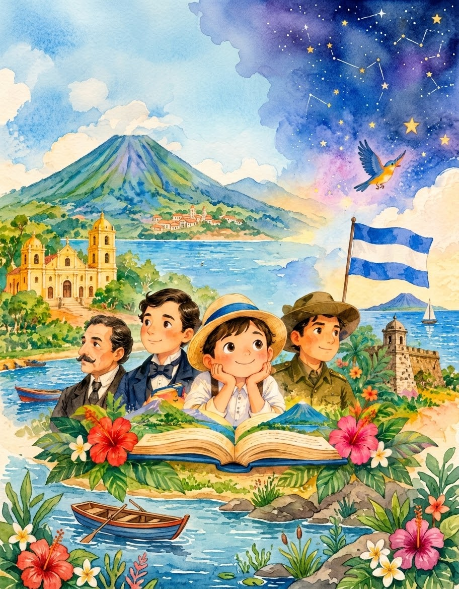
Nicaragua
un viaje de historia
Nicaragua: A journey of stories
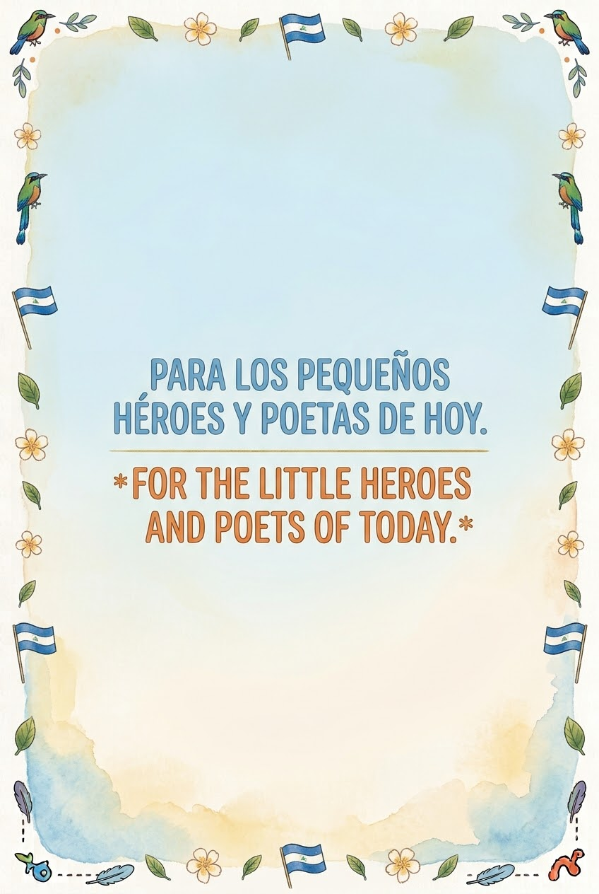
DEDICATORIA
Dedicamos este libro a todos los niños y niñas, tanto de Nicaragua como de otros paises, que desean descubrir la riqueza de nuestra historia y cultura. Que cada cuento sea una ventana hacia Nicaragua, que les permita conocer a sus personajes emblematicos,sus tradiciones y legado que forman parte de nuestra identidad nacional. Deseamos que estas paginas despierten su imaginacion, fortalezcan su amor por la lectura y les enseñe que, a traves de las historias y los idiomas, podemos conocer,valorar y respetar las culturas de diferentes pueblos. Con cariño, dedicamos este libro a las nuevas generaciones, para que descruban que cada cultura tiene una historia que contar y que conocerla es una forma de acercarnos, aprender y compartir.
We dedicate this book to all children—in Nicaragua and beyond—who wish to discover the richness of our history and culture. May each story serve as a window into Nicaragua, offering a glimpse of its iconic figures, traditions, and the legacy that shapes our national identity. We hope these pages ignite your imagination, deepen your love for reading, and show you that through stories and languages, we can come to know, value, and respect the cultures of different peoples. With affection, we dedicate this book to the new generations, so that they may discover that every culture has a story to tell—and that learning these stories is a way to bring us closer together, to learn, and to share.
Índice
- 📖 RUBÉN DARÍO (10 Escenas)
- Historia 1: El pequeño Ruben (Pág. 1)
- Historia 2: El niño que amaba los libros (Pág. 2)
- Historia 3: Las palabras se convierten en poemas (Pág. 3)
- Historia 4: Un libro llamado "Azul" (Pág. 4)
- Historia 5: Ruben conocio a margarita (Pág. 5)
- Historia 6: Una princesa y una estrella (Pág. 6)
- Historia 7: El sueño de margarita (Pág. 7)
- Historia 8: Las palabras viajan por el mundo (Pág. 8)
- Historia 9: Un tesoro de nicaragua (Pág. 9)
- Historia 10: Lo que aprendemos de ruben (Pág. 10)
- ⚔️ ANDRÉS CASTRO (5 Escenas)
- Historia 1: Un niño de managua(Pág. 11)
- Historia 2: Un joven valiente (Pág. 12)
- Historia 3: San jacinto (Pág. 13)
- Historia 4: Una piedra y mucho valor (Pág. 14)
- Historia 5: Un heroe de nicaragua (Pág. 15)
- 🎓 MIGUEL LARREYNAGA (5 Escenas)
- Historia 1: Un niño curioso (Pág. 16)
- Historia 2: Los libros de leon (Pág. 17)
- Historia 3: Un gran estudiante (Pág. 18)
- Historia 4: Un momento importante para centroamerica (Pág. 19)
- Historia 5: El poder de aprender (pag.20) { return this.; })
- 🕊️ AUGUSTO C. SANDINO (6 Escenas)
- Historia 1: Un niño de Ninohomo (Pág. 21)
- Historia 2: Una idea en su corazon (Pág. 22)
- Historia 3: Un viaje que cambio sus ideas (Pág. 23)
- Historia 4: Regreso a Nicaragua (Pág. 24)
- Historia 5: Una palabra importante: SOBERANIA (Pág. 25)
- Historia 6: Un legado que permanece (Pág. 26)
- Bibliografia
El pequeño Rubén
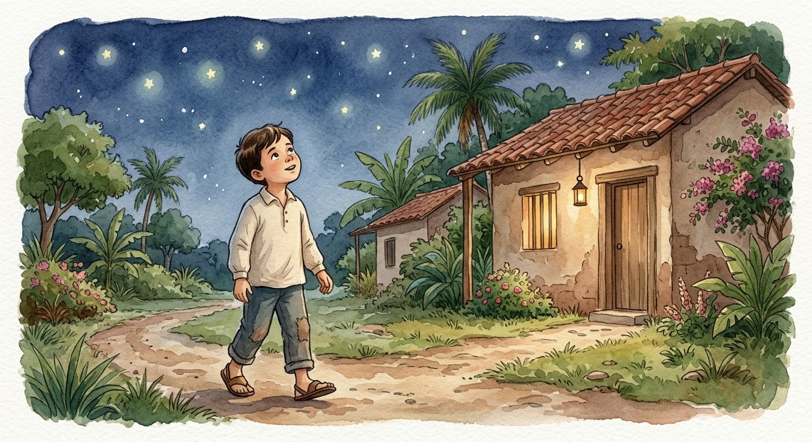
En un pequeño pueblo de Nicaragua llamado Metapa, nació un niño llamado Félix Rubén García Sarmiento. Pero todos lo conocerían por otro nombre: Rubén Darío. Desde pequeño, Rubén tenía una gran curiosidad. Le gustaba escuchar historias, mirar las estrellas y descubrir nuevas palabras. Parecía que dentro de él había un pequeño mundo lleno de imaginación.
In a small town in Nicaragua called Metapa, a boy named Félix Rubén García Sarmiento was born. But everyone would know him by another name: Rubén Darío. From a very young age, Rubén was very curious. He liked listening to stories, looking at the stars, and discovering new words. It seemed that a little world full of imagination lived inside him.
El niño que amaba los libros
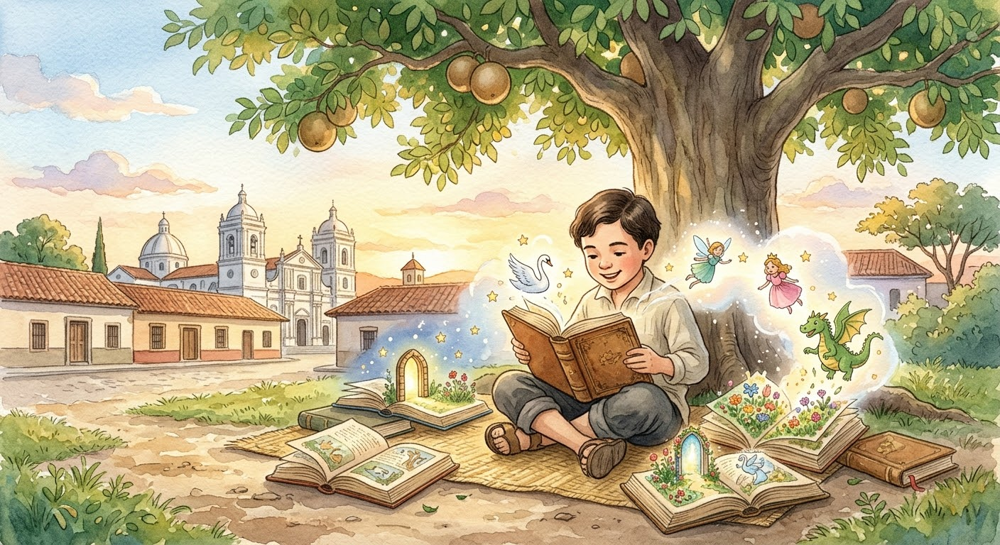
Rubén creció en la ciudad de León, junto a su familia. En casa encontró libros que despertaron su imaginación. Leía y leía. ¡Y había algo sorprendente! Rubén aprendió a leer cuando tenía solamente tres años. Las palabras de los libros parecían pequeñas puertas que lo llevaban a lugares maravillosos.
Rubén grew up in the city of León with his family. At home, he found books that filled his imagination. He read and read. And there was something amazing! Rubén learned to read when he was only three years old. The words in the books were like little doors that took him to wonderful places.
Las palabras se convierten en poemas
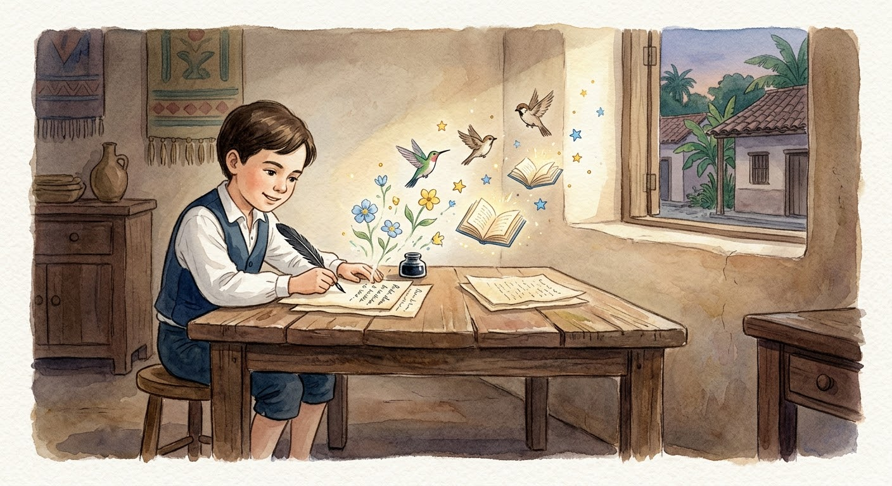
Cada libro le enseñaba algo nuevo. Rubén comenzó a descubrir que las palabras no solo servían para leer. También podían jugar, cantar y crear imágenes. Entonces empezó a escribir. Una palabra aquí. Otra palabra allá. Y poco a poco, sus palabras comenzaron a convertirse en poemas.
Every book taught him something new. Rubén began to discover that words were not only for reading. Words could also play, sing, and create pictures. So he began to write. One word here. Another word there. Little by little, his words became poems.
Un libro llamado Azul...
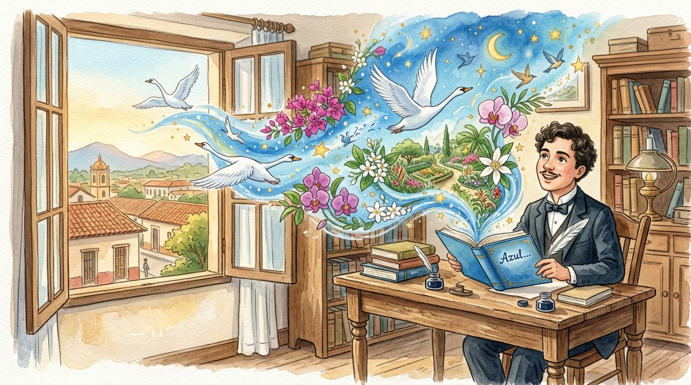
Cuando Rubén creció, siguió escribiendo. Un día publicó un libro llamado Azul... Sus páginas estaban llenas de imaginación, belleza y color. Rubén había descubierto algo especial: Las palabras también podían pintar. Y sus poemas comenzaron a viajar mucho más allá de Nicaragua.
When Rubén grew up, he continued writing. One day, he published a book called Azul... Its pages were full of imagination, beauty, and color. Rubén had discovered something special: Words could also paint. And his poems began to travel far beyond Nicaragua.
Rubén conoce a Margarita
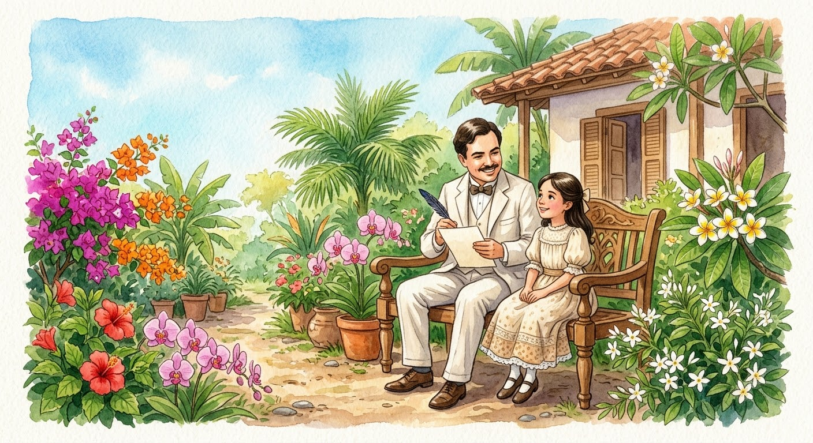
Pasó el tiempo y Rubén continuó escribiendo cuentos y poemas. Un día conoció a una niña llamada Margarita. Margarita era curiosa y soñadora. —Rubén, ¿me cuentas un cuento? —le pidió. Rubén sonrió. Entonces tomó papel y comenzó a imaginar una historia maravillosa.
Time passed, and Rubén continued writing stories and poems. One day, he met a girl named Margarita. Margarita was curious and dreamed of wonderful things. “Rubén, can you tell me a story?” she asked. Rubén smiled. Then he took some paper and began to imagine a wonderful story.
Una princesa y una estrella
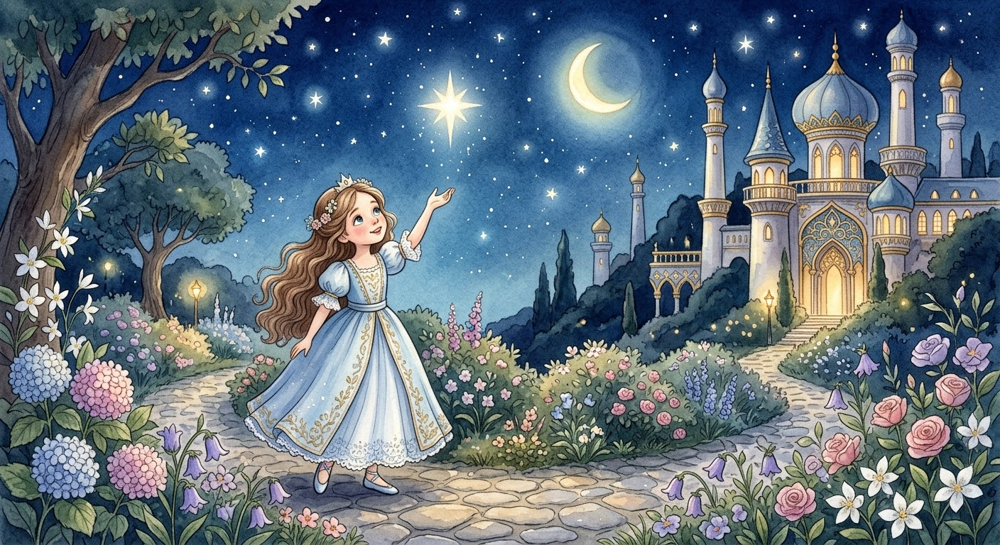
Rubén comenzó su cuento. Había una vez una pequeña princesa que vivía en un hermoso palacio. Una noche, la princesa miró al cielo y vio una estrella brillante. —¡Qué hermosa! —pensó. La estrella parecía llamarla desde muy lejos. La princesa soñó con tenerla cerca. Y así comenzó su aventura entre la luna y las estrellas.
Rubén began his story. Once upon a time, there was a little princess who lived in a beautiful palace. One night, the princess looked at the sky and saw a bright star. “How beautiful!” she thought. The star seemed to call her from far away. The princess dreamed of having it close to her. And so her adventure among the moon and the stars began.
El sueño de Margarita
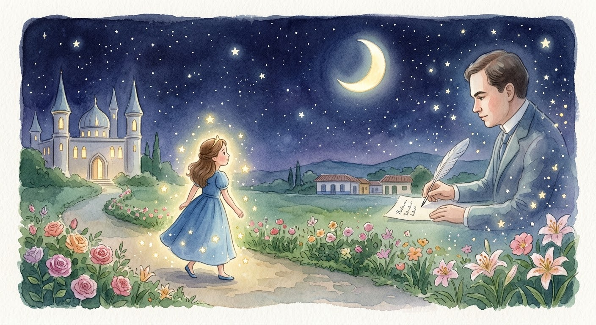
La pequeña princesa quería guardar aquella estrella como un hermoso recuerdo. Su aventura la llevó a mirar más allá de lo que podía ver. Cuando regresó, llevaba consigo el brillo de la estrella. Rubén había creado un cuento donde los sueños, la imaginación y las estrellas podían encontrarse. Margarita había pedido un cuento. Y recibió algo aún más especial: un cuento hecho de palabras y sueños.
The little princess wanted to keep the star as a beautiful memory. Her adventure made her look beyond what she could see. When she returned, she carried the star's light with her. Rubén had created a story where dreams, imagination, and stars could meet. Margarita had asked for a story. And she received something even more special: a story made of words and dreams.
Las palabras viajan por el mundo
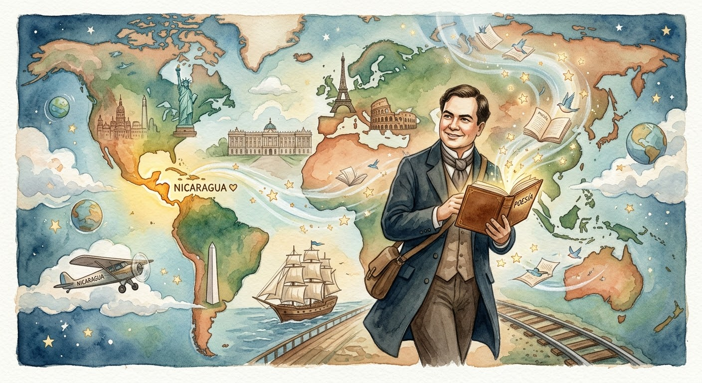
Los años pasaron. Rubén viajó por muchos lugares y sus palabras viajaron con él. Conoció otras ciudades y otras personas. Sus poemas fueron leídos en diferentes países. Pero, aunque estaba lejos, nunca olvidó la tierra donde había comenzado su historia: Nicaragua.
The years passed. Rubén traveled to many places, and his words traveled with him. He met new people and visited new cities. His poems were read in different countries. But even when he was far away, he never forgot the land where his story had begun: Nicaragua.
Un tesoro de Nicaragua
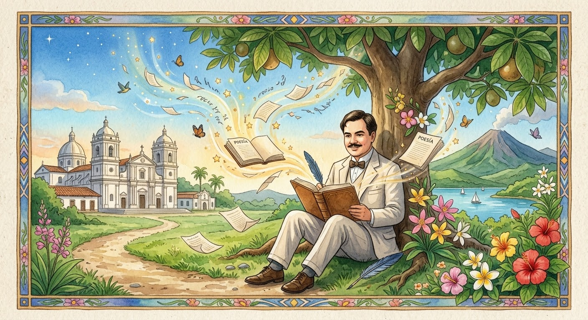
Rubén Darío nos dejó muchos cuentos y poemas. Con sus palabras hizo que los lectores imaginaran princesas, estrellas, jardines y mundos maravillosos. Pero también nos dejó algo muy importante: el orgullo de ser nicaragüense. Porque Rubén viajó por el mundo, pero siempre llevó a Nicaragua en sus palabras. Y las palabras de un niño que amaba leer se convirtieron en un tesoro para todos.
Rubén Darío left us many stories and poems. With his words, he helped readers imagine princesses, stars, gardens, and wonderful worlds. But he also left us something very important: the pride of being Nicaraguan. Rubén traveled around the world, but he always carried Nicaragua in his words. And the words of a boy who loved reading became a treasure for everyone.
Lo que aprendemos de Rubén
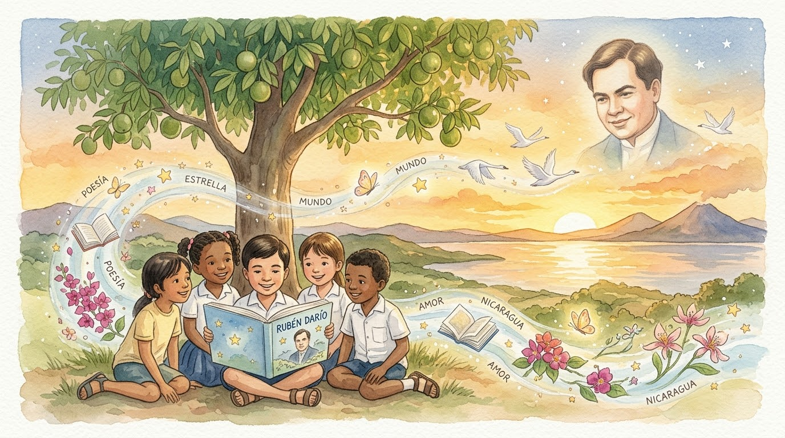
Rubén Darío nos enseña que leer, imaginar y crear puede convertir nuestros sueños en algo hermoso. Nunca dejemos de aprender. Nunca dejemos de imaginar. Y nunca olvidemos nuestras raíces.
Rubén Darío teaches us that reading, imagining, and creating can turn our dreams into something beautiful. Let us never stop learning. Let us never stop imagining. And let us never forget our roots.
Un niño de Managua
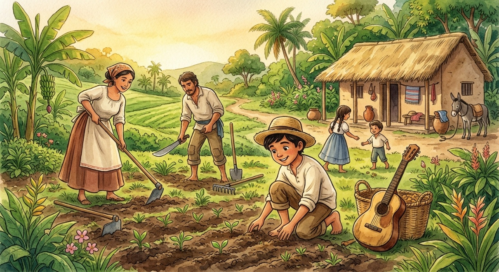
Hace muchos años, en la Villa de Managua, nació un niño llamado Andrés Castro. Andrés creció en una familia campesina. Desde pequeño aprendió a trabajar, a cuidar la tierra y a valorar el esfuerzo. También le gustaba mucho la música y disfrutaba tocar la guitarra.
Many years ago, in the town of Managua, a boy named Andrés Castro was born. Andrés grew up in a farming family. From a young age, he learned to work, care for the land, and value effort. He also loved music and enjoyed playing the guitar.
Un joven valiente
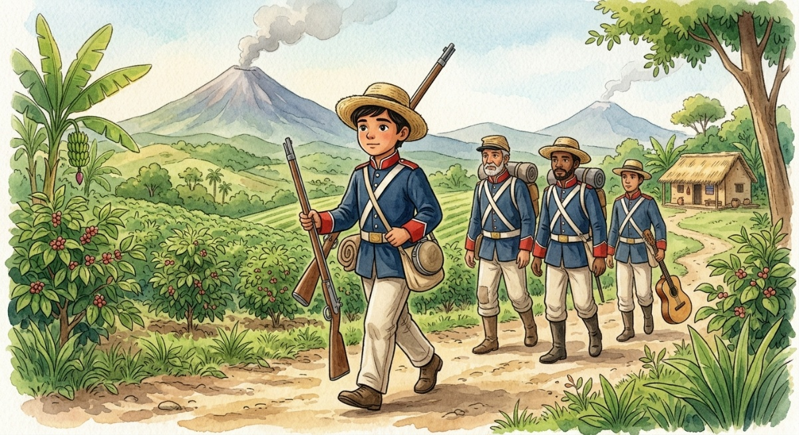
Cuando Andrés creció, decidió servir a su país. Se convirtió en soldado y aprendió a ser responsable, fuerte y valiente. Con el tiempo, su esfuerzo fue reconocido y llegó a ser sargento. Pero todavía no sabía que pronto viviría uno de los momentos más importantes de su vida.
When Andrés grew up, he decided to serve his country. He became a soldier and learned to be responsible, strong, and brave. Over time, his hard work was recognized, and he became a sergeant. But he did not know that one of the most important moments of his life was coming.
San Jacinto
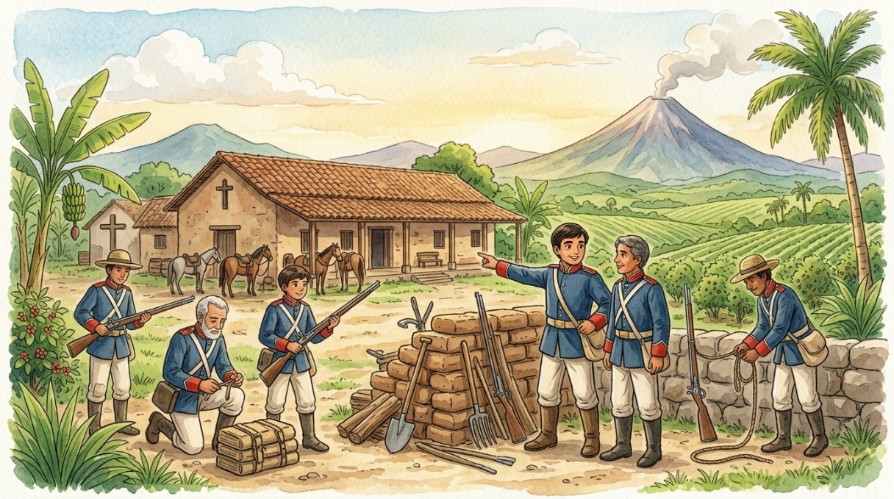
Era el año 1856. Andrés llegó a la Hacienda San Jacinto junto a otros hombres que iban a defender aquel lugar. Todos sabían que tenían una misión difícil. Andrés respiró profundamente. —Debemos ser valientes —pensó. Y junto a sus compañeros decidió hacer todo lo posible para proteger su tierra.
It was the year 1856. Andrés arrived at San Jacinto Farm with other men who came to defend the place. Everyone knew they had a difficult mission. Andrés took a deep breath. “We must be brave,” he thought. Together with his companions, he decided to do everything they could to protect their land.
Una piedra y mucho valor
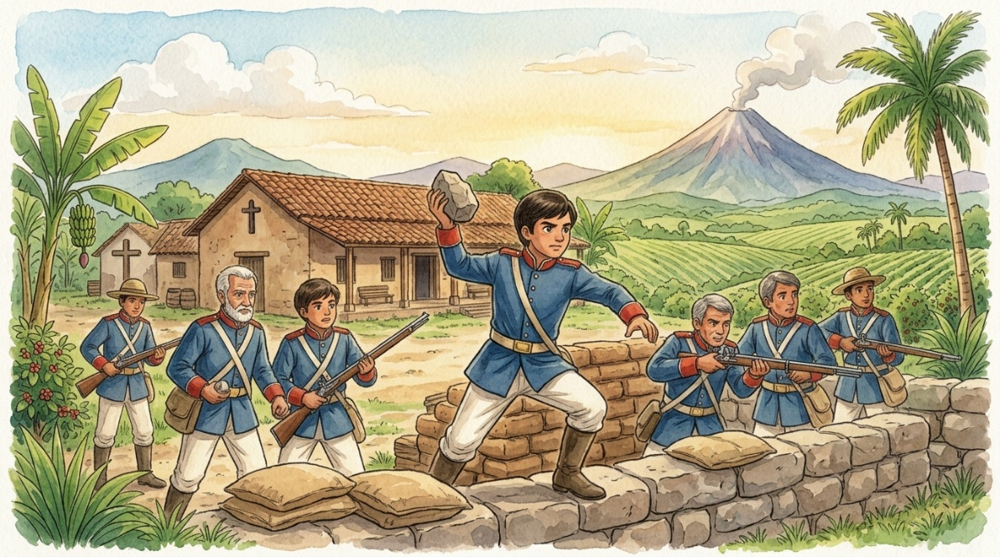
Durante la batalla, Andrés se encontró en un momento muy difícil. Su arma ya no podía ayudarlo. Pero Andrés no se rindió. Vio una piedra cerca de él y, con mucha valentía, la utilizó para detener a un enemigo que intentaba entrar. Aquel momento quedó en la memoria de Nicaragua como un ejemplo de valor.
During the battle, Andrés found himself in a difficult moment. His weapon could no longer help him. But Andrés did not give up. He saw a stone near him and, with great courage, used it to stop an enemy who was trying to enter. That moment remained in Nicaragua's memory as an example of courage.
Un héroe de Nicaragua
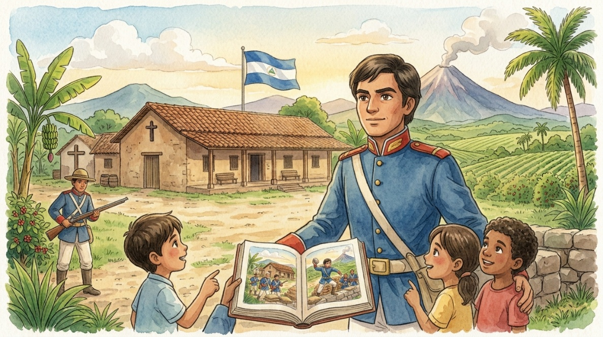
Andrés Castro continuó viviendo en Nicaragua y formó una familia. Con el paso de los años, los nicaragüenses siguieron recordando su valentía. En 1982, fue declarado Héroe Nacional de Nicaragua. Su historia nos recuerda que ser valiente también significa hacer lo correcto cuando tenemos miedo.
Andrés Castro continued living in Nicaragua and started a family. As the years passed, Nicaraguans continued to remember his courage. In 1982, he was declared a National Hero of Nicaragua. His story reminds us that being brave also means doing the right thing when we are afraid.
Un niño curioso
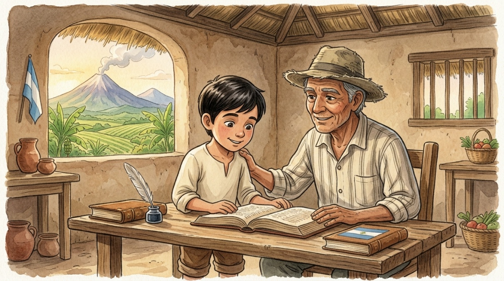
Hace muchos años, en Telica, Nicaragua, nació un niño llamado Miguel Larreynaga. Miguel perdió a sus padres cuando era pequeño. Su abuelo se encargó de cuidarlo y de ayudarlo a continuar sus estudios. Desde niño, Miguel descubrió que aprender podía abrir muchas puertas.
Many years ago, in Telica, Nicaragua, a boy named Miguel Larreynaga was born. Miguel lost his parents when he was very young. His grandfather took care of him and helped him continue his studies. As a child, Miguel discovered that learning could open many doors.
Los libros de León
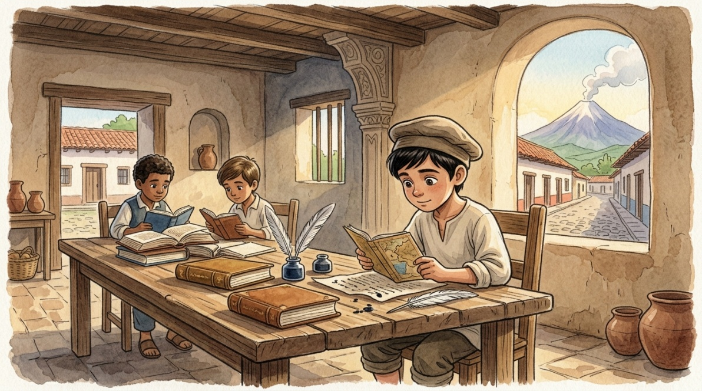
Miguel viajó a León para continuar sus estudios. Allí aprendió muchas cosas. Estudió filosofía, retórica y otras materias. Cada libro era una nueva oportunidad para descubrir algo. Miguel estudiaba con entusiasmo porque sabía que el conocimiento podía ayudar a las personas.
Miguel traveled to León to continue his studies. There, he learned many things. He studied Philosophy, Rhetoric, and other subjects. Every book was a new opportunity to discover something. Miguel studied with enthusiasm because he knew that knowledge could help people.
Un gran estudiante
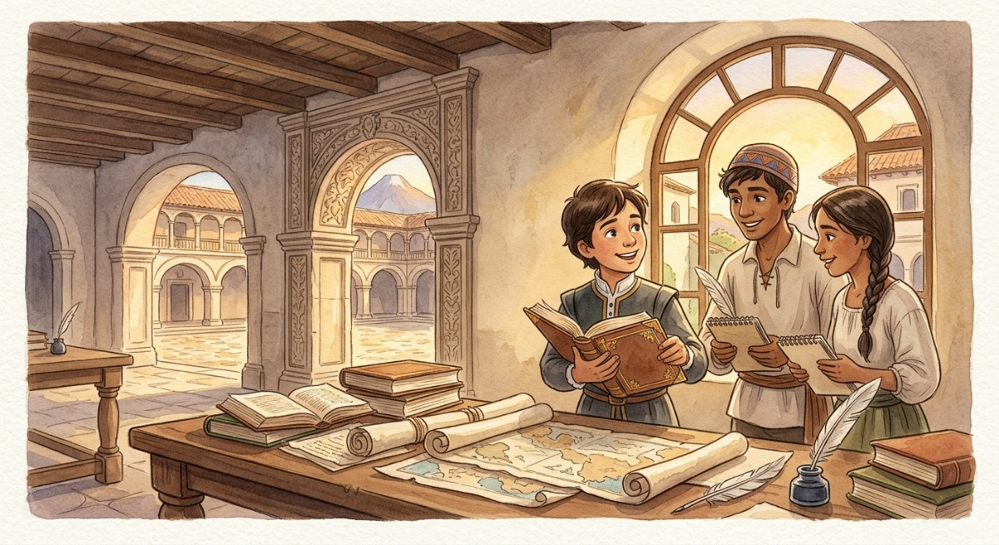
Miguel siguió estudiando y llegó hasta la Universidad de San Carlos de Guatemala. Allí obtuvo su título de abogado. También aprendió sobre derecho, filosofía y otras áreas del conocimiento. Aquel niño curioso se había convertido en un hombre preparado y dedicado al aprendizaje.
Miguel continued studying and went to the University of San Carlos in Guatemala. There, he earned his law degree. He also studied Law, Philosophy, and other areas of knowledge. That curious boy had become a well-educated man who loved learning.
Un momento importante
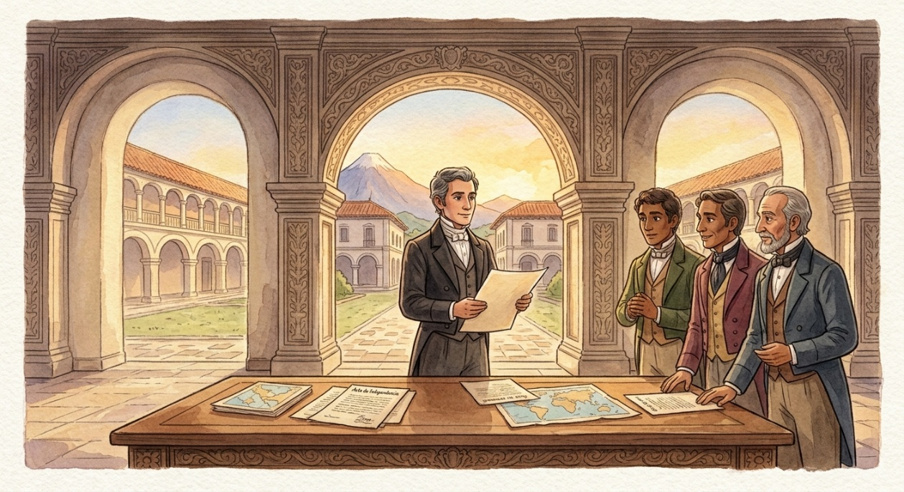
En 1821, Miguel se encontraba en Guatemala. Allí participó en las discusiones relacionadas con la independencia de Centroamérica. Era un momento muy importante. Miguel sabía que estaba viviendo una parte de la historia. Su nombre quedaría unido para siempre a aquel acontecimiento.
In 1821, Miguel was in Guatemala. There, he took part in discussions related to the independence of Central America. It was a very important moment. Miguel knew that he was living through history. His name would always be connected to that important event.
El poder de aprender
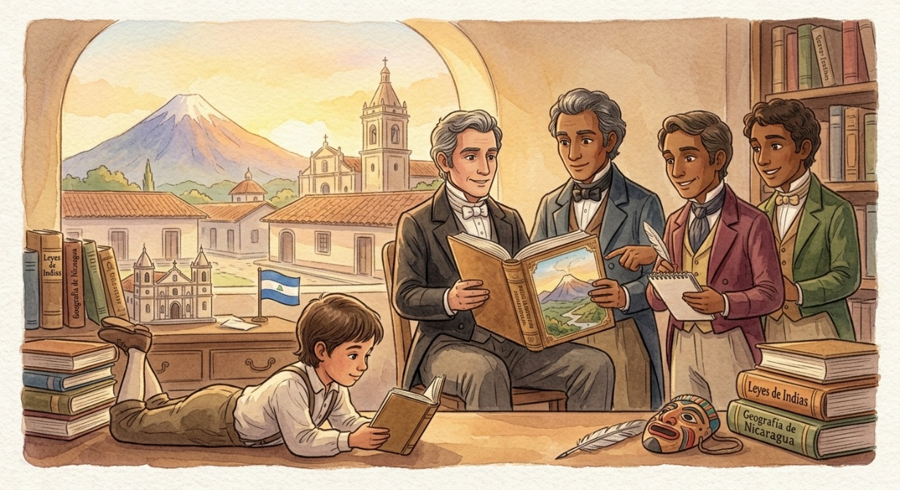
Miguel continuó enseñando y trabajando durante muchos años. Fue abogado, profesor y servidor público. Su vida nos dejó una gran enseñanza: Estudiar nos ayuda a comprender el mundo y a construir un mejor futuro. Por eso, Miguel Larreynaga sigue siendo recordado en Nicaragua.
Miguel continued teaching and working for many years. He was a lawyer, teacher, and public servant. His life left an important lesson: Studying helps us understand the world and build a better future. That is why Miguel Larreynaga is still remembered in Nicaragua.
Un niño de Niquinohomo
En un pueblo llamado Niquinohomo, en Nicaragua, nació un niño llamado Augusto Nicolás Calderón Sandino. Desde pequeño conoció el trabajo del campo. Su mamá recogía café y su papá trabajaba en la producción de café. Sandino aprendió desde niño que el trabajo y el esfuerzo eran importantes.
In a town called Niquinohomo, in Nicaragua, a boy named Augusto Nicolás Calderón Sandino was born. From a young age, he knew farm work. His mother picked coffee, and his father worked in coffee production. Sandino learned that work and effort were important.
Una idea en su corazón
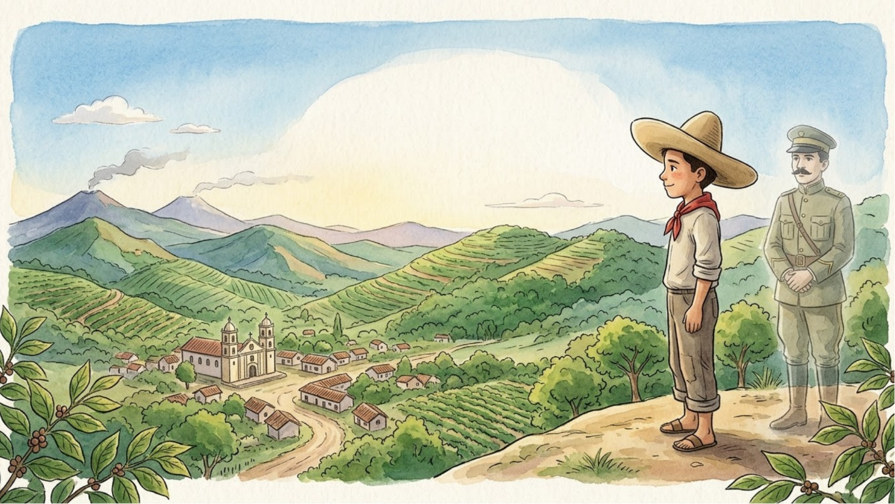
Cuando Sandino era joven, vivió momentos difíciles en Nicaragua. También conoció la historia de hombres que defendieron su país. Uno de ellos fue Benjamín Zeledón. Aquella experiencia dejó una profunda impresión en Sandino. Desde entonces, comenzó a pensar mucho en Nicaragua y en la defensa de su patria.
When Sandino was young, Nicaragua experienced difficult times. He also learned about people who defended their country. One of them was Benjamín Zeledón. That experience deeply affected Sandino. From then on, he thought a lot about Nicaragua and the defense of his homeland.
Un viaje que cambió sus ideas
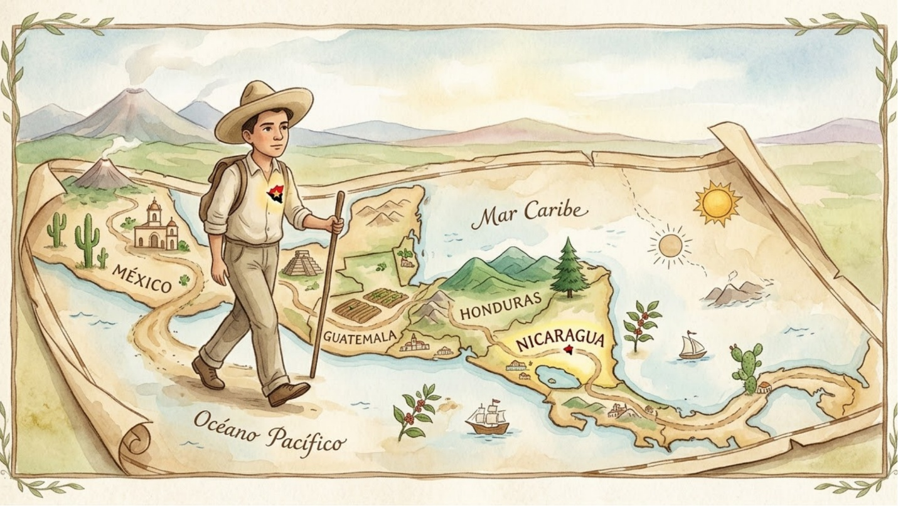
Sandino salió de Nicaragua y viajó por varios países. Vivió y trabajó en Honduras, Guatemala y México. Durante esos viajes conoció nuevas personas e ideas. Pero, aunque estaba lejos, siempre pensaba en Nicaragua.
Sandino left Nicaragua and traveled to different countries. He lived and worked in Honduras, Guatemala, and Mexico. During his travels, he met new people and learned new ideas. But even when he was far away, he always thought about Nicaragua.
Regreso a Nicaragua
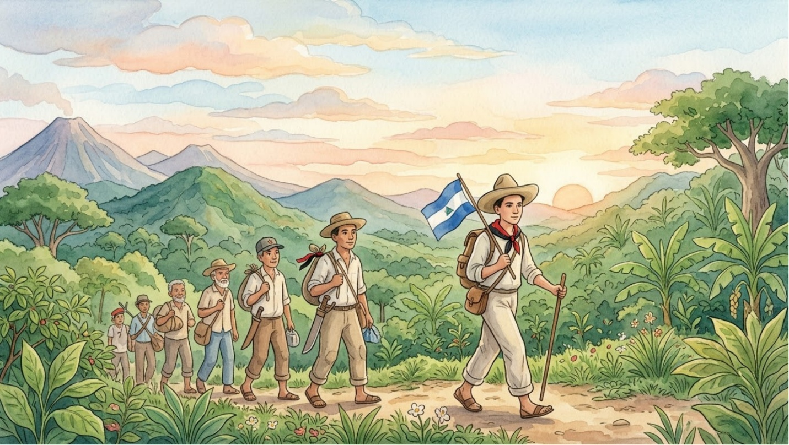
En 1926, Sandino regresó a Nicaragua. Encontró un país lleno de problemas y decidió participar en la lucha que se estaba librando. Con otros hombres comenzó a organizarse. Su propósito era defender lo que él consideraba la soberanía de Nicaragua.
In 1926, Sandino returned to Nicaragua. He found a country facing many problems and decided to take part in the struggle that was happening. He organized with other men. His purpose was to defend what he believed was Nicaragua's sovereignty.
Soberanía
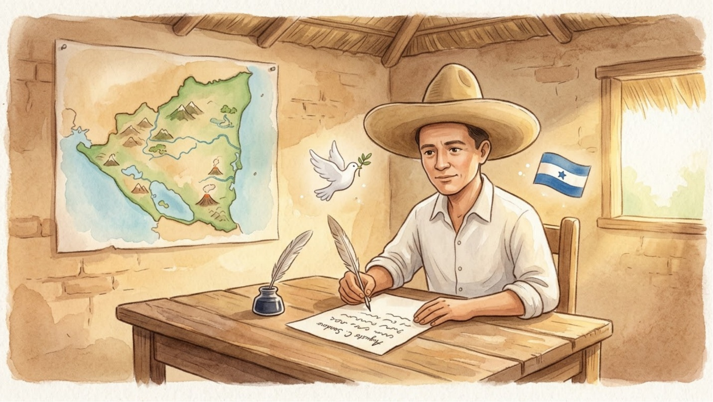
Para Sandino, había una palabra muy importante: soberanía. Él quería que Nicaragua pudiera decidir su propio camino. Durante varios años defendió sus ideas y escribió mensajes para explicar lo que pensaba. Su nombre comenzó a ser conocido en diferentes lugares.
For Sandino, there was one very important word: sovereignty. He wanted Nicaragua to be able to choose its own path. For many years, he defended his ideas and wrote messages to explain what he believed. His name became known in different places.
Un legado que permanece
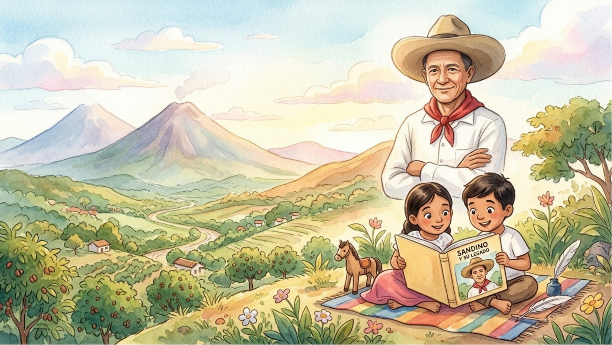
La vida de Sandino terminó en 1934, pero su nombre continuó siendo recordado. Para muchos nicaragüenses, su figura representa la defensa de la soberanía, la dignidad y el amor por Nicaragua. Por eso recibió un nombre que quedó en la memoria del país: “General de Hombres y Mujeres Libres”
Sandino's life ended in 1934, but his name continued to be remembered. For many Nicaraguans, his figure represents the defense of sovereignty, dignity, and love for Nicaragua. That is why he became known by a name remembered in the country: “General of Free Men and Women”
Descubre las historias de Rubén Darío, Andrés Castro, Miguel Larreynaga y Augusto C. Sandino. Cuatro grandes nicaragüenses que, con sus sueños, valentía y talento, hicieron un mejor país. ¡Sus historias también son tuyas!
Discover the stories of Rubén Darío, Andrés Castro, Miguel Larreynaga, and Augusto C. Sandino. Four great Nicaraguans who, with their dreams, courage, and talent, made a better country. Their stories are also yours!
Esta obra fue escrita y diseñada por [CARMEN YUNIELKA AGUIRRE HERNADEZ], [MARTHA MERCEDES MORALES GONZALEZ] y [JOSUE DAVID CERDA VELASQUEZ], con el propósito de acercar la historia de Nicaragua a las nuevas generaciones.
This work was written and designed by ,[CARMEN YUNIELKA AGUIRRE HERNADEZ], [MARTHA MERCEDES MORALES GONZALEZ] y [JOSUE DAVID CERDA VELASQUEZ], with the purpose of bringing Nicaragua's history closer to new generations.